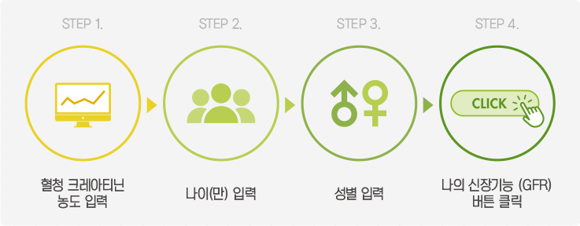
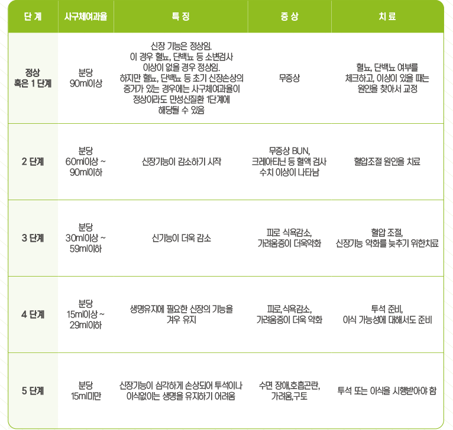

GRF 계산기
나의 신장기능 확인
신장기능의 단계적 특징
사구체여과율과 신장기능 확인

혈청 크레아티닌 농도
mg/dl
나이(만)
*만 나이를 입력해 주세요.
성별
남자
여자
나의 신장기능(GFR)
mL/min/1.73 m
2
귀하의 신장기능은

Ref. 1. 대한신장학회. 일반인을 위한 콩팥병 정보 available at
http://www.ksn.or.kr/sub10/sub_n_03.html